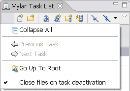
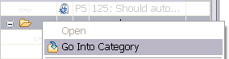
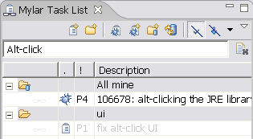
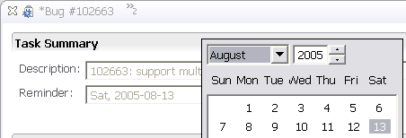

Ant editing

Items added since Mylar 0.3.4 are highlighted
|
Ant editing |
Interest-based filtering is
now supported in the Ant editor's Outline view by toggling the
glasses.
|
|
|
|
|
Interest-based content assist |
The top of the content assist menu will put the items that are in
your task context on top of the list, to enable quick selection via
arrow keys. Once you start typing the menu will work as usual. Note
that the Mylar Java Editor needs to be set as default for ".java"
files (this is the only new functionality that comes from the Mylar
Java editor).
|
|
|
|
|
Toggle auto folding |
Pressing the editor toolbar button with the Mylar glasses on it will
enable/disable Mylar's automatic folding. This can be useful
when needing to browse through the code, or copy/paste code around
(since Eclipse's folding support can cause odd expansions when
copying folded regions,
bug
104648).
|
|
|
|
|
Show all filtered children |
When you are using filtering in a Mylar view you have the option of
temporarily showing all children of a filtered node by <alt>clicking
a node that is not currently selected. For example, you can
<alt>click a source folder, keep the <alt> key down, and continue
drilling down until you find a method of interest.
|
|
|
|
|
Filter declarations in Package Explorer |
If you don't like Mylar's constant showing of Java members in the
Package Explorer, select the drop-down menu, then "Filters..." and
enable the "Mylar Java Declarations Filter". It will then
stick in the menu in case you want to toggle between modes.
|
|
|
|
|
Highlight a task context |
You can associate a task with a
highlighter. This can be useful if you are using Mylar without the
filtering support. It also allows you to distinguish between
task contexts if you have multiple tasks active.
|
|
|
|
|
Search within task context |
The automatically updated Mylar Task
Context working set can be searched as any other working set, either
via the popup menus or using the search dialog. For example,
to find all System.out/err calls before checking in, search for
"System." within the task context. To quickly search all references
click Alt+Shift+G.
|
|
|
|
|
Directly manipulate interest |
Directly manually manipulate the
interest level of one or more elements by right clicking them and using the two
Mylar actions in the popup menu. Keyboard shortcuts for these
are Ctrl+Alt+Shift+Up Arrow for Make Landmark, and
Ctrl+Alt+Shift+Down Arrow for Make Less Interesting.
This now supports disjoint
selections.
|
|
|
|
|
Interest filtering for the Java Browsing perspective |
Interest filtering can be toggled for
the Packages, Types, and Members views simultaneously by clicking
the leftmost toolbar button visible below.
|
|
New context menu actions |
The task list now contains
actions for collapsing all nodes, navigating, and specifying
preferences for file closing behavior on task activation.  |
|
|
|
|
Focus on a single task category |
To see only the tasks for a single category
select the "Go Into Category" action from the context menu. To
go back to viewing all tasks and categories under the root use the
"Go Up To Root" action in the Task List's toolbar pull down menu
(visible above).  |
||||
|
|||||
|
Quick filter |
To filter task by name or
regexp type the filter text into the field and all matched tasks
will display. Note that this will temporarily suppress all
other filters. To clear the query press the "x" button to the
right of the text field.  |
|
|
|
|
Reminders |
Set a reminder for a task when creating it, or by selecting the
"Summary" tab of the Task Editor. When you start using Eclipse
on the given day the reminders will come up.  |
|
|
|
|
Open reports in web browser |
Bug reports can be opened with either the Bug Editor or the Internal
Web Browser. This can be set as a Task List preferences.
When the Bug Editor is open you can click the hyperlink to show the
report in the browser (e.g. to use a feature not yet available in
the editor, such as voting).
|
|
|
|